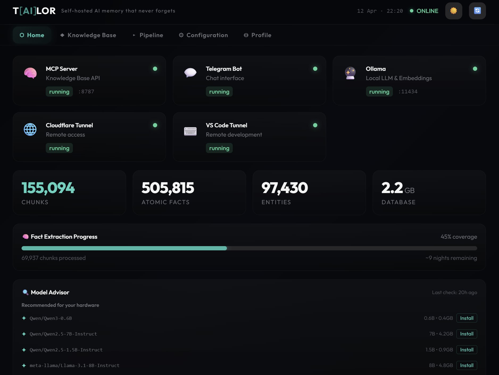

Persistent AI memory. 100% local.
LLM-agnostic infrastructure for your local intelligence.
Every new session is a blank slate. Your decisions, preferences, and history vanish — requiring constant re-explanation.
A dedicated local service that enables any LLM to recall years of conversations, preferences, and facts — instantly.
Your memories never leave your machine. Zero cloud dependency, zero data leaks.
Switch between Claude, GPT, Gemini, and Ollama without losing a single byte of context.
20+ built-in tools via Model Context Protocol. Works with Claude, ChatGPT, and any MCP client.
Recursive scans of PDF, Excel, CSV, Word, and PowerPoint.
Gmail (OAuth2), IMAP sync, and Telegram real-time capture.
OneDrive, Google Drive, Dropbox via rclone.
Parsers for ChatGPT, Claude, and Gemini Takeout exports.
Drag-and-drop dashboard uploads with progress tracking.
Enrichment · Search · Memory
Enterprise-grade primitives for local AI
Semantic + keyword + entity search with ONNX cross-encoder reranking on consumer hardware.
~28ms / queryLLMs extract discrete facts from every document. Second-order derivation infers connections you never made explicit.
Dual-layer dating — document_date vs event_date — for time-aware retrieval. Memory isn't just what, it's when.
Automated pipeline: entity extraction, fact derivation, supersession filtering — all while you sleep.
Built-in autonomous tools for search, memory management, reminders, Telegram, file operations, and system commands.
When facts change, TAILOR detects contradictions and auto-supersedes outdated info. No manual cleanup.
Scans HuggingFace and cloud APIs for models that fit your hardware. One-click install from the dashboard.
Ordered list of LLM backends with automatic rotation on rate limits. Config-driven, zero downtime.
Whether you prefer a graphical dashboard or a conversational bot, TAILOR provides unified control over your local intelligence.
Real-time KB stats, live config editor, 10-step setup wizard, conversation uploads.
Query your KB from your phone. Auto session capture after 10 min of inactivity.

| Feature | T[AI]LOR | Supermemory |
|---|---|---|
| Hosting | 100% Local / Self-Hosted | Cloud Managed |
| Privacy | Data on your machine | SaaS Terms |
| LLM Support | Any provider (4 built-in) | Locked to their stack |
| Tool Use | 20+ autonomous MCP tools | API Webhooks |
| Cost | Free (Apache 2.0) | Monthly Credits |
| Model Discovery | Hardware-aware recommendations | — |
| Enrichment Backends | Multi-backend with auto-rotation | Single provider |
From zero to persistent intelligence
Open localhost:8787 — the 10-step Setup Wizard configures providers, sync, and Telegram.
Add TAILOR as an MCP connector in Claude, ChatGPT, or any MCP-compatible client.